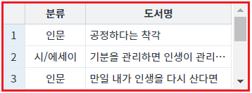

DataList에서 지정한 컬럼의 데이터와 주어진 문자열이 일치하는 행 데이터를 반환받는 예시입니다. 반환 데이터의 유형에 따라 함수가 분리되어 있습니다. 함수의 인자는 동일합니다. 반환 데이터의 유형은 5가지이며, 유형별 함수는 다음과 같습니다.
JSON 형식 : getMatchedJSON
1차원 Array 형식 + 컬럼 정보 : getMatchedArray
2차원 Array 형식 : getMatchedData
XML 형식 : getMatchedXML
Row Index가 담긴 1차원 Array 형식 : getMatchedIndex
각 함수의 부가 기능으로는 데이터 검색 조건(일치 또는 포함) 설정과 검색할 행의 범위 설정이 있습니다.
함수별 반환 데이터 형식 비교하기
데이터 일치 여부 설정 비교하기
검색할 행의 범위 설정 비교하기
영역 '데이터 구조 확인용 GridView'에 데이터를 검색할 DataList와 연결되어 있는 GridView가 구성되어 있습니다.
이 GridView를 통해 DataList에 할당된 데이터를 확인할 수 있습니다.그림 1.브라우저(Chrome) 실행 예시 - 데이터 구조 확인용 GridView

각 버튼을 클릭하여 반환되는 데이터 형식을 확인할 수 있습니다.
버튼을 클릭하고 '로그 확인'에 출력된 로그를 확인합니다.
(브라우저의 개발자 도구 콘솔에도 로그가 출력되며, 객체 형식으로 확인할 수 있습니다.)
STEP 1. DataList에 할당된 데이터를 확인합니다.
각 컬럼에 연결된 JSON 데이터의 KEY는 다음과 같습니다. - label : 도서명 - categoryLabel : 분류
DataList에 할당된 JSON 형식의 데이터
[
{ "label": "공정하다는 착각", "categoryLabel": "인문" },
{ "label": "기분을 관리하면 인생이 관리된다", "categoryLabel": "시/에세이" },
{ "label": "만일 내가 인생을 다시 산다면", "categoryLabel": "인문" },
{ "label": "인생 수업", "categoryLabel": "시/에세이" },
{ "label": "내가 틀릴 수도 있습니다", "categoryLabel": "인문" },
{ "label": "무엇이 옳은가", "categoryLabel": "인문" },
{ "label": "문명의 붕괴(Collapse)", "categoryLabel": "역사/문화" },
{ "label": "불편한 편의점", "categoryLabel": "소설" },
{ "label": "우리는 여전히 삶을 사랑하는가", "categoryLabel": "인문" },
{ "label": "책들의 부엌", "categoryLabel": "소설" }
]STEP 2. 컬럼 '분류'의 값이 '소설'과 일치하는 데이터를 JSON 형식으로 받기
버튼 컬럼 '분류'의 값이 '소설'과 일치하는 데이터 받기 - JSON 형식을 클릭합니다.STEP 3. 실행된 결과를 확인합니다.
로그
[10:53:39] # 컬럼 '분류'의 값이 '소설'과 일치하는 데이터 받기 - JSON 형식 | 함수 getMatchedJSON 호출 값
[10:53:39] [{"categoryLabel":"소설","label":"불편한 편의점","rowStatus":"R"},{"categoryLabel":"소설","label":"책들의 부엌","rowStatus":"R"}]STEP 4. 컬럼 '분류'의 값이 '소설'과 일치하는 데이터를 '1차원 Array + 컬럼 정보' 형식으로 받기
버튼 컬럼 '분류'의 값이 '소설'과 일치하는 데이터 받기 - 1차원 Array 형식 + 컬럼 정보를 클릭합니다.STEP 5. 실행된 결과를 확인합니다.
로그
[10:55:43] # 컬럼 '분류'의 값이 '소설'과 일치하는 데이터 받기 - 1차원 Array 형식 + 컬럼 정보 | 함수 getMatchedArray 호출 값
[10:55:43] {"columnInfo":["categoryLabel","label"],"data":["소설","불편한 편의점","소설","책들의 부엌"]}STEP 6. 컬럼 '분류'의 값이 '소설'과 일치하는 데이터를 '2차원 Array' 형식으로 받기
버튼 컬럼 '분류'의 값이 '소설'과 일치하는 데이터 받기 - 2차원 Array 형식을 클릭합니다.STEP 7. 실행된 결과를 확인합니다.
로그
[10:58:31] # 컬럼 '분류'의 값이 '소설'과 일치하는 데이터 받기 - 1차원 Array 형식 | 함수 getMatchedData 호출 값 [10:58:31] [["소설","불편한 편의점"],["소설","책들의 부엌"]]
STEP 8. 컬럼 '분류'의 값이 '소설'과 일치하는 데이터를 'XML' 형식으로 받기
버튼 컬럼 '분류'의 값이 '소설'과 일치하는 데이터 받기 - XML 형식을 클릭합니다.STEP 9. 실행된 결과를 확인합니다.
로그
[10:59:26] # 컬럼 '분류'의 값이 '소설'과 일치하는 데이터 받기 - XML 형식 | 함수 getMatchedXML 호출 값 [10:59:26] <list id="dlt_books_1"><map index="7"><categoryLabel>소설</categoryLabel><label>불편한 편의점</label><rowStatus statusValue="0">R</rowStatus></map><map index="9"><categoryLabel>소설</categoryLabel><label>책들의 부엌</label><rowStatus statusValue="0">R</rowStatus></map></list>
STEP 10. 컬럼 '분류'의 값이 '소설'과 일치하는 Row Index를 '1차원 Array' 형식으로 받기
버튼 컬럼 '분류'의 값이 '소설'과 일치하는 Row Index 받기 - 1차원 Array 형식을 클릭합니다.STEP 11. 실행된 결과를 확인합니다.
로그
[11:02:18] # 컬럼 '분류'의 값이 '소설'과 일치하는 Row Index 받기 - 1차원 Array 형식 | 함수 getMatchedIndex 호출 값 [11:02:18] [7,9]
버튼을 클릭하고 '로그 확인'에 출력된 로그를 확인합니다.
(브라우저의 개발자 도구 콘솔에도 로그가 출력되며, 객체 형식으로 확인할 수 있습니다.)
STEP 1. DataList에 할당된 데이터를 확인합니다.
각 컬럼에 연결된 JSON 데이터의 KEY는 다음과 같습니다. - label : 도서명 - categoryLabel : 분류
DataList에 할당된 JSON 형식의 데이터
[
{ "label": "공정하다는 착각", "categoryLabel": "인문" },
{ "label": "기분을 관리하면 인생이 관리된다", "categoryLabel": "시/에세이" },
{ "label": "만일 내가 인생을 다시 산다면", "categoryLabel": "인문" },
{ "label": "인생 수업", "categoryLabel": "시/에세이" },
{ "label": "내가 틀릴 수도 있습니다", "categoryLabel": "인문" },
{ "label": "무엇이 옳은가", "categoryLabel": "인문" },
{ "label": "문명의 붕괴(Collapse)", "categoryLabel": "역사/문화" },
{ "label": "불편한 편의점", "categoryLabel": "소설" },
{ "label": "우리는 여전히 삶을 사랑하는가", "categoryLabel": "인문" },
{ "label": "책들의 부엌", "categoryLabel": "소설" }
]STEP 2. 컬럼 '분류'의 값이 '에세이'와 일치하는 데이터를 JSON 형식으로 받기
버튼 컬럼 '분류'의 값이 '에세이'와 일치하는 데이터 받기 - JSON 형식을 클릭합니다.STEP 3. 실행된 결과를 확인합니다.
일치하는 데이터가 없어 빈 배열이 반환됩니다.
로그
[11:08:15] # 컬럼 '분류'의 값이 '에세이'와 일치하는 데이터 받기 - JSON 형식 | 함수 getMatchedJSON 호출 값 [11:08:15] []
STEP 4. 컬럼 '분류'의 값에 '에세이'가 포함된 데이터를 JSON 형식으로 받기
버튼 컬럼 '분류'의 값에 '에세이'가 포함된 데이터 받기 - JSON 형식을 클릭합니다.STEP 3. 실행된 결과를 확인합니다.
문자열 '에세이'가 포함된 값인 '시/에세이'가 출력됩니다.
로그
[11:10:11] # 컬럼 '분류'의 값에 '에세이'가 포함된 데이터 받기 - JSON 형식 | 함수 getMatchedJSON 호출 값
[11:10:11] [{"categoryLabel":"시/에세이","label":"기분을 관리하면 인생이 관리된다","rowStatus":"R"},{"categoryLabel":"시/에세이","label":"인생 수업","rowStatus":"R"}]버튼을 클릭하고 '로그 확인'에 출력된 로그를 확인합니다.
(브라우저의 개발자 도구 콘솔에도 로그가 출력되며, 객체 형식으로 확인할 수 있습니다.)
STEP 1. DataList에 할당된 데이터를 확인합니다.
각 컬럼에 연결된 JSON 데이터의 KEY는 다음과 같습니다. - label : 도서명 - categoryLabel : 분류
DataList에 할당된 JSON 형식의 데이터
[
{ "label": "공정하다는 착각", "categoryLabel": "인문" },
{ "label": "기분을 관리하면 인생이 관리된다", "categoryLabel": "시/에세이" },
{ "label": "만일 내가 인생을 다시 산다면", "categoryLabel": "인문" },
{ "label": "인생 수업", "categoryLabel": "시/에세이" },
{ "label": "내가 틀릴 수도 있습니다", "categoryLabel": "인문" },
{ "label": "무엇이 옳은가", "categoryLabel": "인문" },
{ "label": "문명의 붕괴(Collapse)", "categoryLabel": "역사/문화" },
{ "label": "불편한 편의점", "categoryLabel": "소설" },
{ "label": "우리는 여전히 삶을 사랑하는가", "categoryLabel": "인문" },
{ "label": "책들의 부엌", "categoryLabel": "소설" }
]STEP 2. 전체 행을 대상으로 컬럼 '분류'의 값이 '시/에세이'와 일치하는 데이터를 JSON 형식으로 받기
버튼 전체 행을 대상으로 컬럼 '분류'의 값이 '시/에세이'와 일치하는 데이터 받기 - JSON 형식을 클릭합니다.STEP 3. 실행된 결과를 확인합니다.
총 2건의 데이터가 반환됩니다.
로그
[11:15:41] # 전체 행을 대상으로 컬럼 '분류'의 값이 '시/에세이'와 일치하는 데이터 받기 - JSON 형식 | 함수 getMatchedJSON 호출 값
[11:15:41] [{"categoryLabel":"시/에세이","label":"기분을 관리하면 인생이 관리된다","rowStatus":"R"},{"categoryLabel":"시/에세이","label":"인생 수업","rowStatus":"R"}]STEP 2. 0~2번째 행을 대상으로 컬럼 '분류'의 값이 '시/에세이'와 일치하는 데이터를 JSON 형식으로 받기
버튼 0~2번째 행을 대상으로 컬럼 '분류'의 값이 '시/에세이'와 일치하는 데이터 받기 - JSON 형식을 클릭합니다.STEP 3. 실행된 결과를 확인합니다.
총 1건의 데이터가 반환됩니다.
로그
[11:16:49] # 0~2번째 행을 대상으로 컬럼 '분류'의 값이 '시/에세이'와 일치하는 데이터 받기 - JSON 형식 | 함수 getMatchedJSON 호출 값
[11:16:49] [{"categoryLabel":"시/에세이","label":"기분을 관리하면 인생이 관리된다","rowStatus":"R"}]DataList의 함수 'getMatchedJSON'를 이용하여 스크립트를 작성합니다. 세부 지정은 아래의 스크립트 예시에 작성되어 있습니다.
스크립트
//예제 파일에서는 스크립트 scwin.btn_exam1_1_onclick에 작성되어 있습니다. // DataList 'dlt_books_1'의 컬럼 '분류'의 값이 '소설'과 일치하는 데이터를 JSON으로 반환받습니다. let result = dlt_books_1.getMatchedJSON("categoryLabel", "소설");
반환 데이터는 JSON 형식입니다. 반환된 JSON의 키 'rowStatus'는 웹스퀘어 엔진에서 생성한 키입니다. 행(Row)의 데이터 상태를 확인할 수 있습니다.
반환 값
[
{"categoryLabel":"소설","label":"불편한 편의점","rowStatus":"R"},
{"categoryLabel":"소설","label":"책들의 부엌","rowStatus":"R"}
]DataList의 함수 'getMatchedArray'를 이용하여 스크립트를 작성합니다. 세부 지정은 아래의 스크립트 예시에 작성되어 있습니다.
스크립트
//예제 파일에서는 스크립트 scwin.btn_exam1_2_onclick에 작성되어 있습니다. // DataList 'dlt_books_1'의 컬럼 '분류'의 값이 '소설'과 일치하는 데이터를 '1차원 Array 형식 + 컬럼 정보'으로 반환받습니다. let result = dlt_books_1.getMatchedArray("categoryLabel", "소설")
반환되는 데이터는 JSON 형식으로, KEY 'data'에는 DataList의 전체 데이터가 1차원 배열로, KEY 'columnInfo'에는 컬럼의 ID가 1차원 배열로 구성되어 있습니다.
반환 값
{
"columnInfo": ["categoryLabel", "label"],
"data": ["소설", "불편한 편의점", "소설", "책들의 부엌"]
}DataList의 함수 'getMatchedData'를 이용하여 스크립트를 작성합니다. 세부 지정은 아래의 스크립트 예시에 작성되어 있습니다.
스크립트
//예제 파일에서는 스크립트 scwin.btn_exam1_3_onclick에 작성되어 있습니다. // DataList 'dlt_books_1'의 컬럼 '분류'의 값이 '소설'과 일치하는 데이터를 '2차원 Array 형식'으로 반환받습니다. let result = dlt_books_1.getMatchedData("categoryLabel", "소설");
반환 데이터는 2차원 배열 형식입니다.
반환 값
[
["소설", "불편한 편의점"],
["소설", "책들의 부엌"]
]DataList의 함수 'getMatchedXML'를 이용하여 스크립트를 작성합니다. 세부 지정은 아래의 스크립트 예시에 작성되어 있습니다.
스크립트
//예제 파일에서는 스크립트 scwin.btn_exam1_4_onclick에 작성되어 있습니다. // DataList 'dlt_books_1'의 컬럼 '분류'의 값이 '소설'과 일치하는 데이터를 'XML' 형식으로 반환받습니다. let result = dlt_books_1.getMatchedXML("categoryLabel", "소설");
반환 데이터는 XML 형식입니다. XML의 노드명은 Dataist의 속성 'baseNode'와 속성 'repeatNode'의 값에 정의된 값으로 구성됩니다.
반환 값
<list id="dlt_books_1"> <map index="8"> <categoryLabel>소설</categoryLabel> <label>불편한 편의점</label> <rowStatus statusValue="0">R</rowStatus> </map> <map index="11"> <categoryLabel>소설</categoryLabel> <label>책들의 부엌</label> <rowStatus statusValue="0">R</rowStatus> </map> </list>
DataList의 함수 'getMatchedData'를 이용하여 스크립트를 작성합니다. 세부 지정은 아래의 스크립트 예시에 작성되어 있습니다.
스크립트
//예제 파일에서는 스크립트 scwin.btn_exam1_5_onclick에 작성되어 있습니다. // DataList 'dlt_books_1'의 컬럼 '분류'의 값이 '소설'과 일치하는 Row Index를 '1차원 Array'로 반환받습니다. let result = dlt_books_1.getMatchedIndex("categoryLabel", "소설");
반환 데이터는 행의 인덱스가 담긴 1차원 배열 형식입니다.
반환 값
[8,11]
아래의 DataList의 함수를 이용하여 스크립트를 작성합니다.
getMatchedJSON : JSON 형식
getMatchedArray : 1차원 Array 형식 + 컬럼 정보
getMatchedData : 2차원 Array 형식
getMatchedXML : XML 형식
getMatchedIndex : Row Index가 담긴 1차원 Array 형식
각 함수는 반환 데이터의 유형만 다르며 인자 값의 구성을 동일합니다. 이 예시는 함수 'getMatchedJSON'를 이용하여 작성한 스크립트입니다. 세부 지정은 아래의 스크립트 예시에 작성되어 있습니다.
스크립트
//예제 파일에서는 스크립트 'scwin.btn_exam2_1_onclick'과 'scwin.btn_exam2_2_onclick'에 작성되어 있습니다. // 예시 1) DataList 'dlt_books_1'의 컬럼 '분류'의 값이 '에세이'와 일치하는 데이터를 JSON으로 반환받습니다. - 3번째 인자값을 true로 지정 let result1 = dlt_books_1.getMatchedJSON("categoryLabel", "에세이", true); // 예시 2) DataList 'dlt_books_1'의 컬럼 '분류'의 값에 '에세이'가 포함된 데이터를 JSON으로 반환받습니다. - 3번째 인자값을 false로 지정 let result2 = dlt_books_1.getMatchedJSON("categoryLabel", "에세이", false);
아래의 DataList의 함수를 이용하여 스크립트를 작성합니다.
getMatchedJSON : JSON 형식
getMatchedArray : 1차원 Array 형식 + 컬럼 정보
getMatchedData : 2차원 Array 형식
getMatchedXML : XML 형식
getMatchedIndex : Row Index가 담긴 1차원 Array 형식
각 함수는 반환 데이터의 유형만 다르며 인자 값의 구성을 동일합니다. 이 예시는 함수 'getMatchedJSON'를 이용하여 작성한 스크립트입니다. 세부 지정은 아래의 스크립트 예시에 작성되어 있습니다.
스크립트
//예제 파일에서는 스크립트 'scwin.btn_exam3_1_onclick'과 'scwin.btn_exam3_2_onclick'에 작성되어 있습니다. // 예시 1) DataList 'dlt_books_1'의 전체 행을 대상으로 컬럼 '분류'의 값이 '시/에세이'와 일치하는 데이터를 JSON으로 반환받습니다. let result1 = dlt_books_1.getMatchedJSON("categoryLabel", "시/에세이", true); // 예시 2) DataList 'dlt_books_1'의 0~2번째 행을 대상으로 컬럼 '분류'의 값이 '시/에세이'와 일치하는 데이터를 JSON으로 반환받습니다. - 4번째 인자와 5번째 인자를 지정. let result2 = dlt_books_1.getMatchedJSON("categoryLabel", "시/에세이", true, 0, 2);
getMatchedArray( colInfo , dataValue , exactMatch , stRowIndex , lastRowIndex )
getMatchedData( colInfo , dataValue , exactMatch , stRowIndex , lastRowIndex )
getMatchedIndex( conInfo , dataValue , exactMatch , stRowIndex , lastRowIndex )
getMatchedJSON( colInfo , dataValue , exactMatch , stRowIndex , lastRowIndex )
getMatchedXML( colInfo , dataValue , exactMatch , stRowIndex , lastRowIndex )